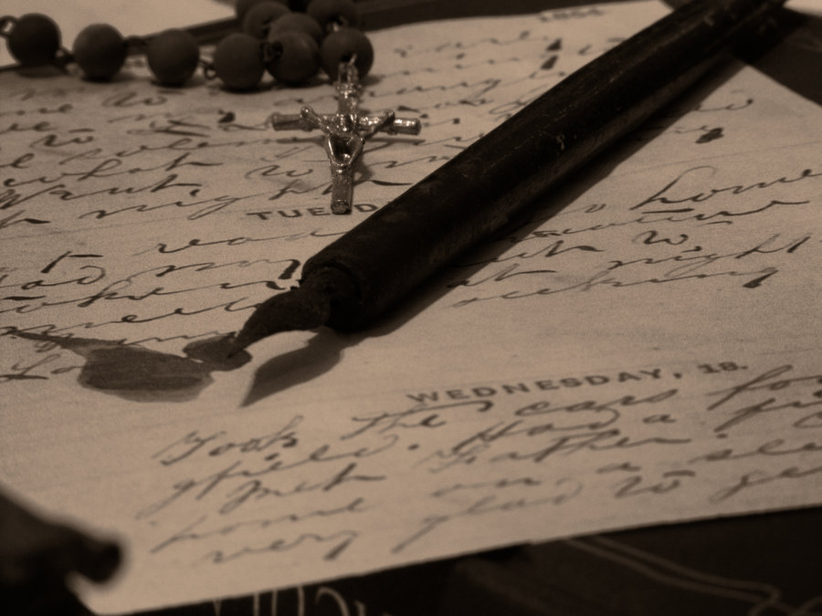

Jonathan Harker's Journal
She was in such evident distress that I tried to comfort her, but without effect. Finally she went down on her knees and implored me not to go; at least to wait a day or two before starting. It was all very ridiculous but I did not feel comfortable. However, there was a business to be done, and I could not allow nothing to interfere with it. I therefore tried to raise her up, and said, as gravely as I could, that I thanked her, but my duty was imperative, and that I must go. She then rose and dried her eyes, and taking the crucifix from her neck offered it to me. I did not know what to do, for, as an English Churchman, I have been taught to regard such things as in some measure idolatrous, and yet it seemed ungracious to refuse an old lady meaning so well in such a state of mind. She saw, I suppose, the doubt in my face, for she put the rosary around my neck, and said, “for your mother’s sake,” and went out of the room. I am writing this part of the diary whilst I am waiting for the coach, which is, of course, late; and the crucifix is still around my neck. Whether it is the old lady’s fear, or the many ghostly traditions of this place, or the crucifix itself, I do not know, but I am not feeling nearly as easy in my mind as usual. If this book should ever reach Mina before I do, let it bring my good-bye.